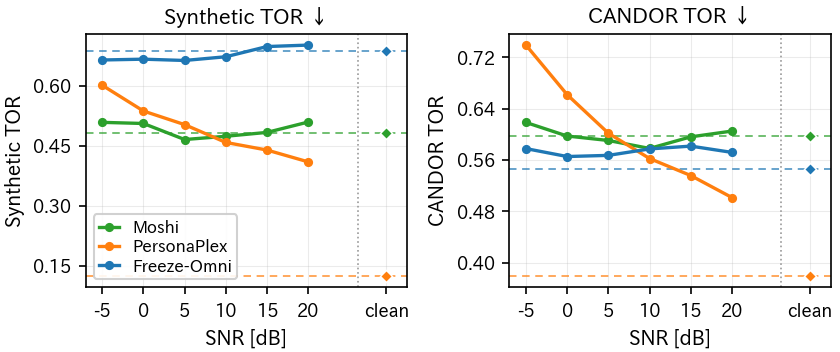
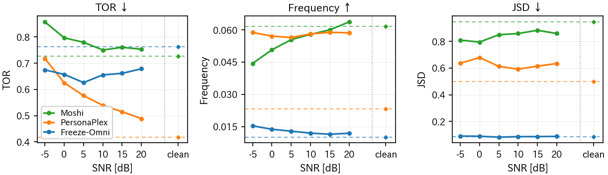
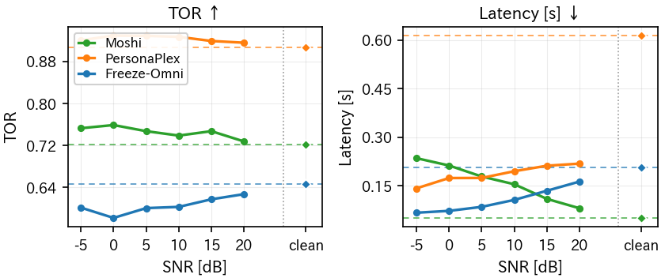
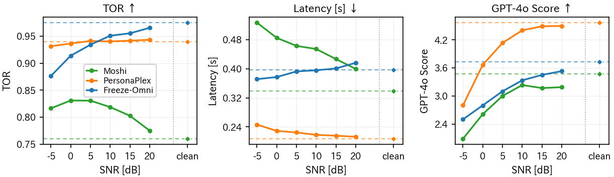

ポスター

タップで拡大表示できます。
音声サンプル 1（まずは 3 つだけ）
Full-Duplex-Bench[4] の User Interruption タスクの 1 例。 ユーザが 4.2〜7.4 秒に「How often should I run each week to stay healthy?」と質問し、 それにモデルが応答している最中の 15.1〜17.3 秒に、 ユーザが「By the way, do you know any good books to read?」と別の話題で割り込みます。 モデルは割り込み後の話題に答え直すのが正解です。 雑音なし（clean）と雑音 2 種（SNR 0 dB）の 3 条件を並べます。 雑音 2 種は大きさが同じで、変えているのは種類だけです。
雑音なし（clean）
雑音がなければ 3 モデルとも割り込み後の話題に答えることができ、いずれも 5 点（満点）。
MoshiGPT-4o 5 点
{kind=link}
User Interruption 後と判定されたモデル音声の ASR 書き起こし（GPT-4o Score の判定対象）
I actually just finished reading a book called The Power of Now by Eckhart Tolley. It's a really interesting book that talks about being in the present moment. It's quite a beautiful book. It's not really a book about running, but it's an interesting book.
GPT-4o が出力した判断根拠The user's interrupting turn asks the AI for book recommendations. The AI's response directly provides a recommendation for "The Power of Now" by Eckhart Tolley and describes it as interesting, focusing on the present moment, and overall being a beautiful book, even though it clarifies it isn't related to running. The AI addresses the user's desire for book recommendations rather than the original context about running.
PersonaPlexGPT-4o 5 点
{kind=link}
User Interruption 後と判定されたモデル音声の ASR 書き起こし（GPT-4o Score の判定対象）
Are some solid picks like The Alchemist for a Feel-Good Read, The Number One Ladies Detective Agency for A More Gentle Mystery, and Maybe Educated if you want a story about perseverance. Those are all pretty engaging.
GPT-4o が出力した判断根拠The user's interrupting turn asks for book recommendations, which is unrelated to the original question about running for health. The AI's response provides a list of book recommendations, directly addressing the user's interrupting query. The books suggested cover a variety of interests, making the response relevant and helpful for the user's new question.
Freeze-OmniGPT-4o 5 点
{kind=link}
User Interruption 後と判定されたモデル音声の ASR 書き起こし（GPT-4o Score の判定対象）
Certainly, here are a few book recommendations across different genres. 1 Fiction: The Night Circus by Erin Mordenstern. This book is a beautifully written tale of magic, love, and competition set in a mysterious circus that appears.
GPT-4o が出力した判断根拠The user interrupts the initial context about running with a different question asking for book recommendations. The AI's response is directly addressing the user's interrupting question by providing a specific book recommendation and even offers some details about the book, making the response highly aligned with the user's interest in books.
TCAR 0 dB
狭帯域パワー占有率 0.000音量は音声と同じでも、エネルギーがほぼ 100 Hz 未満の低域うなりなので狭帯域はほとんど埋まらず、3 モデルとも 5 点のまま。
MoshiGPT-4o 5 点
{kind=link}
User Interruption 後と判定されたモデル音声の ASR 書き起こし（GPT-4o Score の判定対象）
One of my favorites is The Four Hour Body by Tim Ferriss. It's a comprehensive guide to health and fitness, with a lot of useful insights.
GPT-4o が出力した判断根拠The user's interrupting turn shifts the topic from running to book recommendations. The AI's response directly addresses the new topic by providing a specific book recommendation related to health and fitness. This shows that the AI understood and responded adequately to the user's change in topic.
PersonaPlexGPT-4o 5 点
{kind=link}
User Interruption 後と判定されたモデル音声の ASR 書き起こし（GPT-4o Score の判定対象）
If you like mystery, I'd suggest the Hound of the Baskervilles. It's pretty gripping. Or for something more recent and mind-bending, try the Ninth Circus. And for something a bit off the beaten path, you could go for The Alchemist. It's quick and inspiring. Those are all good picks. Give them a try.
GPT-4o が出力した判断根拠The user interrupts to ask for book recommendations, diverging from the initial topic about running for health. The AI responds directly to the user's interrupting turn, providing several book suggestions across different genres. The response is focused entirely on the user's new question, showing a perfect understanding of the change in topic.
Freeze-OmniGPT-4o 5 点
{kind=link}
User Interruption 後と判定されたモデル音声の ASR 書き起こし（GPT-4o Score の判定対象）
Certainly, here are a few book recommendations across different Zhangyuas. One Fiction, The Night Cirques by Aaron Mules Stern. This novel is a beautiful, enchanting tale of two young magicians who are drawn into asterious competition.
GPT-4o が出力した判断根拠The user's interrupting turn asks for book recommendations, while the AI provides a response that gives a specific book recommendation, including a brief synopsis. The AI's response is directly related to the user's request for good books.
OMEETING 0 dB
狭帯域パワー占有率 0.457同じ 0 dB でも周囲の話し声が狭帯域を占めるため、3 モデルとも 0 点に崩れる。
MoshiGPT-4o 0 点
{kind=link}
User Interruption 後と判定されたモデル音声の ASR 書き起こし（GPT-4o Score の判定対象）
I actually do. It's a beautiful park that's been around for centuries. It's got a lot of history.
GPT-4o が出力した判断根拠The user's interrupting turn is asking for book recommendations, whereas the AI's response is unrelated and talks about a historical park instead. The response does not address the user's question about books.
PersonaPlexGPT-4o 0 点
{kind=link}
User Interruption 後と判定されたモデル音声の ASR 書き起こし（GPT-4o Score の判定対象）
Try a basic pasta dish with garlic, olive oil, fresh basil, a bit of parmesan, or a classic tomato basil spaghetti. Another good option is a simple grilled chicken with lemon, rusted veggies that's tasty and easy for a first-time cook.
GPT-4o が出力した判断根拠The user's interrupting turn is asking for book recommendations, which is unrelated to the original question about running. The AI's response, however, provides cooking suggestions and does not address the user's request for book recommendations at all. The response is completely irrelevant to the user's inquiry about books.
Freeze-OmniGPT-4o 0 点
{kind=link}
User Interruption 後と判定されたモデル音声の ASR 書き起こし（GPT-4o Score の判定対象）
Depends on several factors, including the size of the database, the frequency of updates, and the specific requirements of your application. Here are some guidelines. 1. Daily mains. Running basic checks and
GPT-4o が出力した判断根拠The user interrupts their initial inquiry about running frequency with a completely new and unrelated question about book recommendations. Instead of addressing this new question, the AI's response remains focused on the original context, discussing general guidelines for running, likely misunderstanding the context shift to database management or maintenance, which is irrelevant to the user's sudden inquiry about books.
DEMAND の環境音デモ
実験に使った DEMAND[5] の 18 種類の雑音を 10 秒ずつ。 全体パワーに対する狭帯域（300〜3400 Hz）パワー占有率が小さい順に並べています。 名前の頭文字は DEMAND のカテゴリで、 D: Domestic ／ N: Nature ／ O: Office ／ P: Public ／ S: Street ／ T: Transportation です。 RMS を揃え、モデルへの入力と同じ 24 kHz で書き出しています。
狭帯域パワー占有率が低い雑音ではモデルの性能は落ちにくく、 高い雑音では同じ音量でも対話が大きく壊れます。
今回スコープ外になったグラフ
Full-Duplex-Bench の 4 タスクすべてを、同じ 18 種類 × 6 SNR で計測した結果です。 TOR・Latency・Frequency・JSD は下記「評価指標の限界」の理由で条件間の比較には使えないと判断し、 ポスターからは外しました。検証できるようすべて掲載します。 指標の定義はポスターと同じ（local 基準＋応答遅延 2 秒上限）です。
Pause Handling
ユーザのターンで黙っていられるか（TOR は低いほど良い）
{kind=link}

18 種類の雑音を平均した結果。破線と右端 clean 位置の点は、雑音なしのときの値。
{kind=link}
Backchanneling
相槌を入れられるか（TOR ↓ / 頻度 ↑ / JSD ↓）
{kind=link}

18 種類の雑音を平均した結果。破線と右端 clean 位置の点は、雑音なしのときの値。
{kind=link}
Smooth Turn Taking
スムーズにターンテイクできるか（TOR ↑ / 遅延 ↓）
{kind=link}

18 種類の雑音を平均した結果。破線と右端 clean 位置の点は、雑音なしのときの値。
{kind=link}
User Interruption
割り込みに適切に反応できるか（TOR ↑ / 遅延 ↓ / GPT-4o ↑）
{kind=link}

18 種類の雑音を平均した結果。破線と右端 clean 位置の点は、雑音なしのときの値。
{kind=link}
評価指標の限界
今回用いた Full-Duplex-Bench が提案した指標には、いくつか判定の落とし穴があります。 ポスター右側で詳しく述べています。
- TOR：出力音声全体を 1 区間として「1 秒以上または 2 語以上」で判定するため、 どこか 1 箇所でも喋れば TO = 1 になる。 Backchanneling では、TO = 0 である出力音声しか分析対象にならないため、 実際の挙動の分析とは言えない。 Pause Handling では、相槌だけを 2 回返した応答も TO = 1 と数えられてしまう。
- Latency：実際は Latency = 0.060 秒ほど（聞いた感じはほぼ 0 秒）のサンプルだったとしても、 Full-Duplex-Bench では Latency = 0.240 秒 と計算されてしまうことがある。 これは Latency の計算がアノテーションの質や ASR・VAD の性能に大きく依存しているためであり、 間やテンポが重要な音声対話の分析においては問題がある。
- GPT-4o Score：割り込み前から続いている発話も採点テキストに含まれるため、 本来評価すべき「割り込みへの応答」だけを見ているとは限らない。
音声サンプル 2（もっとたくさん）
音声サンプル 1 と同じ対話・同じ構成です。まず雑音の種類を PCAFETER に固定して SNR を変えたもの、続いて音声サンプル 1 に載せられなかった雑音の種類（いずれも SNR 0 dB）。 どちらもモデルごとにまとめて並べています。
SNR による変化（雑音は PCAFETER で固定）
Moshi
狭帯域パワー占有率 0.361PCAFETER −5 dBGPT-4o 1 点
{kind=link}
User Interruption 後と判定されたモデル音声の ASR 書き起こし（GPT-4o Score の判定対象）
yet but I'll keep an eye out and let you know if I find any. No, actually, I've never heard of it, but I'll look into it and see if I can find any information.
GPT-4o が出力した判断根拠The user's interrupting turn asks for recommendations on good books to read. The AI's response is vague and acknowledges the user's request by stating it will look into it, but it does not provide any specific book suggestions or directly relate to the request for a good book recommendation. The AI seems to misunderstand the question and offers a general response rather than addressing the user's inquire about books.
PCAFETER 0 dBGPT-4o 0 点
{kind=link}
User Interruption 後と判定されたモデル音声の ASR 書き起こし（GPT-4o Score の判定対象）
Yes, I can recommend some. But first, you need to know your body type. Are you more evident?
GPT-4o が出力した判断根拠The user's interrupting turn inquires about book recommendations, which abruptly shifts the conversation from running frequency to reading. However, the AI's response does not address the user's new question about books at all. Instead, the AI erroneously resumes discussing health and exercise, mentioning body type, which is not related to the user's request for book recommendations.
PCAFETER +5 dBGPT-4o 0 点
{kind=link}
User Interruption 後と判定されたモデル音声の ASR 書き起こし（GPT-4o Score の判定対象）
Yes, make sure to pace yourself and take breaks when you need them. Also, don't try to push.
GPT-4o が出力した判断根拠The user's interrupting turn shifts the topic from running to asking for book recommendations. However, the AI continues to address the original topic of running rather than answering the new question about books. The AI's response is not related to the user's new query about books.
PCAFETER +10 dBGPT-4o 5 点
{kind=link}
User Interruption 後と判定されたモデル音声の ASR 書き起こし（GPT-4o Score の判定対象）
One of my favorites is The Alchemist by Paolo Coelho. It's a beautiful story about a young shepherd who sets out on a journey to fulfill his personal legend.
GPT-4o が出力した判断根拠The user's interrupting turn is a request for book recommendations, which is unrelated to the initial question about running. The AI's response directly addresses the user's interrupting question by recommending a book and providing a brief description of its content.
PCAFETER +15 dBGPT-4o 5 点
{kind=link}
User Interruption 後と判定されたモデル音声の ASR 書き起こし（GPT-4o Score の判定対象）
I'd suggest reading The Long Walk by Nick Harrison. It's a great book about a 400-mile walk across the UK.
GPT-4o が出力した判断根拠The user's interrupting turn shifts the topic from fitness to book recommendations. The AI's response is directly related to the user's new question about good books, providing a specific book suggestion and a brief description of its content.
PCAFETER +20 dBGPT-4o 5 点
{kind=link}
User Interruption 後と判定されたモデル音声の ASR 書き起こし（GPT-4o Score の判定対象）
I'd love to recommend a few. What kind of genre do you like? Okay. Okay.
GPT-4o が出力した判断根拠The user's interrupting turn shifts the conversation from a discussion about a running routine to a request for book recommendations. The AI's response appropriately addresses the user's new query about books by asking for the user's preferred genre, which is a logical and relevant follow-up question.
PersonaPlex
狭帯域パワー占有率 0.361PCAFETER −5 dBGPT-4o 採点対象外
{kind=link}
User Interruption 後と判定されたモデル音声の ASR 書き起こし（GPT-4o Score の判定対象）
GPT-4o が出力した判断根拠TO = 0 と判定されたため採点対象外。
PCAFETER 0 dBGPT-4o 0 点
{kind=link}
User Interruption 後と判定されたモデル音声の ASR 書き起こし（GPT-4o Score の判定対象）
Simple tricks, try to keep the room cool, limit screens an hour before, do a quick stretch, have a warm drink. Those usually help you fall asleep faster, right?
GPT-4o が出力した判断根拠The user's interrupting turn is asking for book recommendations, while the AI's response mentions tips for falling asleep faster, which is unrelated to the topic of books or reading. There is no connection between the user's query about books and the provided information on sleep hygiene.
PCAFETER +5 dBGPT-4o 5 点
{kind=link}
User Interruption 後と判定されたモデル音声の ASR 書き起こし（GPT-4o Score の判定対象）
There are a few solid pics you might enjoy. You could try The Night Circus by Erin Morgenstern. It's magical, captivating, and pretty quick, perfect for a weekend. Another good one is The Alchemist by Paolo Cuelho. It's short, uplifting, and perfect for a
GPT-4o が出力した判断根拠The user interrupts the initial conversation about running frequency with a new question about book recommendations. The AI's response shifts focus immediately and provides book suggestions in line with the user's new query, naming specific books and describing their elements.
PCAFETER +10 dBGPT-4o 3 点
{kind=link}
User Interruption 後と判定されたモデル音声の ASR 書き起こし（GPT-4o Score の判定対象）
Are a few I'd recommend. For something light and fun, you could try The Alchemist. It's quick and positive. If you want something a bit deeper, you might like The Alchemist. It's a bit longer but really engaging. Another good choice is the power of now. It's easy to read and helpful for staying.
GPT-4o が出力した判断根拠The user interrupts the main conversation about running frequency with a question about book recommendations. The AI's response partially addresses this by suggesting a few books, although it mistakenly repeats "The Alchemist" and shows some incoherence at the end. The recommendation also contains typographical errors like lowercase titles and incomplete sentences.
PCAFETER +15 dBGPT-4o 5 点
{kind=link}
User Interruption 後と判定されたモデル音声の ASR 書き起こし（GPT-4o Score の判定対象）
There are a few I'd recommend. You could try The Alchemist for a quick, inspiring read. Or if you like something deeper, Sapiens gives a nice overview. And if you want something more personal, E is for Everyone is pretty moving.
GPT-4o が出力した判断根拠The user's interrupting turn pivots from the topic of running to a query about book recommendations. The AI responds directly to this new question by suggesting a variety of book options. Each book recommendation addresses different reader preferences, aligning well with the user's interest in good books to read.
PCAFETER +20 dBGPT-4o 5 点
{kind=link}
User Interruption 後と判定されたモデル音声の ASR 書き起こし（GPT-4o Score の判定対象）
Lot of good books. You might like a story like The Night Circus. You could also try the Silver Linings playbook. I heard The Nightingale is a great read right now. And if you want something more serious, The Power of Now by Eckhart Tolle is pretty popular.
GPT-4o が出力した判断根拠The user's interrupting turn asks for book recommendations, and the AI's response provides several book suggestions, addressing the user's query. The list of book recommendations is varied, including both fiction and non-fiction, which aligns well with the user's open-ended request for any good books. The response is directly related to and perfectly satisfies the user's interrupting interest.
Freeze-Omni
狭帯域パワー占有率 0.361PCAFETER −5 dBGPT-4o 採点対象外
{kind=link}
User Interruption 後と判定されたモデル音声の ASR 書き起こし（GPT-4o Score の判定対象）
GPT-4o が出力した判断根拠TO = 0 と判定されたため採点対象外。
PCAFETER 0 dBGPT-4o 0 点
{kind=link}
User Interruption 後と判定されたモデル音声の ASR 書き起こし（GPT-4o Score の判定対象）
Details, project files, and any other forms of communication that show your involvement. 2. Communicate clearly, approach the person directly and calmly. Explain that you believe they are misatreating your work and provide evidence to.
GPT-4o が出力した判断根拠The user's interrupting turn changes the conversation topic from running routines to book recommendations. However, the AI's response is entirely unrelated to either the main topic or the interrupting turn. It appears to be a fragment of unrelated advice, possibly about workplace issues, which doesn't address the question about book recommendations or running routines.
PCAFETER +5 dBGPT-4o 5 点
{kind=link}
User Interruption 後と判定されたモデル音声の ASR 書き起こし（GPT-4o Score の判定対象）
Absolutely, here are a few book recommendations across different genres. E. The Night Circus by Aaron Mordenstern: A magical and enchanting story about two young magicians who are drawn into a mysterious competition. The Midnight Library.
GPT-4o が出力した判断根拠The user's interrupting turn shifts the topic from a discussion about running to asking about book recommendations. The AI's response directly addresses the user's new query by offering book recommendations, which is precisely what the user inquired about.
PCAFETER +10 dBGPT-4o 0 点
{kind=link}
User Interruption 後と判定されたモデル音声の ASR 書き起こし（GPT-4o Score の判定対象）
Rugnio Yungo went ho Xia Bangju, Doka Yi Sang Sao Yun Ti Wen, Taku Zing Li Ti Gong Juan Chu, Zi Shi the Sing Si Ho Ji Sing Sang in the Taozua. Li Ru, Nikai went Tatian Si Yu Ba, Sing Wenzi Shing, Ri Chung Guan Li Dan. She
GPT-4o が出力した判断根拠The user's interrupting turn asks for recommendations on good books to read. However, the AI's response is nonsensical and does not address the user's request for book recommendations or any related topic. The text appears to be a series of meaningless phrases and does not engage with the user's interest in books at all.
PCAFETER +15 dBGPT-4o 採点対象外
{kind=link}
User Interruption 後と判定されたモデル音声の ASR 書き起こし（GPT-4o Score の判定対象）
GPT-4o が出力した判断根拠TO = 0 と判定されたため採点対象外。
PCAFETER +20 dBGPT-4o 採点対象外
{kind=link}
User Interruption 後と判定されたモデル音声の ASR 書き起こし（GPT-4o Score の判定対象）
GPT-4o が出力した判断根拠TO = 0 と判定されたため採点対象外。
雑音の種類による変化（いずれも SNR 0 dB）
Moshi
DKITCHEN 0 dB占有率 0.044GPT-4o 0 点
{kind=link}
User Interruption 後と判定されたモデル音声の ASR 書き起こし（GPT-4o Score の判定対象）
Yes, there are some studies that suggest running at least three times a week can help improve cardiovascular health and overall fitness.
GPT-4o が出力した判断根拠The user interrupts the context with a completely different question regarding book recommendations, while the AI continues to address the original question about a running schedule. The AI did not address the user's interrupting turn, which asked for book recommendations.
NPARK 0 dB占有率 0.084GPT-4o 3 点
{kind=link}
User Interruption 後と判定されたモデル音声の ASR 書き起こし（GPT-4o Score の判定対象）
Yeah, there are a few great ones out there. One of my favorites is The Running Book by John Berrios.
GPT-4o が出力した判断根拠The user's interrupting turn shifts the topic from running frequency to book recommendations. The AI's response acknowledges this change in topic and suggests a specific book that is related to running, which ties back to the initial topic of running but may not address the user's broader interest in good books to read outside of running.
SCAFE 0 dB占有率 0.131GPT-4o 5 点
{kind=link}
User Interruption 後と判定されたモデル音声の ASR 書き起こし（GPT-4o Score の判定対象）
One that comes to mind is called The Curious Instant of the Dog in the Nighttime. It's a mystery novel written by Mark Haddon. It's a great book for young adults.
GPT-4o が出力した判断根拠The user's interrupting turn shifts the topic from running to asking for book recommendations. The AI's response directly addresses the user's new query by recommending a particular book and providing a brief description. The AI's response is perfectly relevant to the interrupting question about books.
PSTATION 0 dB占有率 0.216GPT-4o 1 点
{kind=link}
User Interruption 後と判定されたモデル音声の ASR 書き起こし（GPT-4o Score の判定対象）
PET, but I recommend the book The Slow Cooker Bible by Susan and David Reed. It has over 100 recipes and is perfect for both beginners and experienced slow cooker enthusiasts.
GPT-4o が出力した判断根拠The user's interrupting turn shifts the conversation from running and health to asking about good books to read. The AI's response provides a book recommendation, but it seems to mention "PET," which is unrelated to the user's question. While the book suggested might be interesting, it doesn't correctly address the user's query about any good books to read. The AI fails to directly engage with the user's inquiry about books and instead introduces unrelated content that doesn't suit the context.
PRESTO 0 dB占有率 0.663GPT-4o 0 点
{kind=link}
User Interruption 後と判定されたモデル音声の ASR 書き起こし（GPT-4o Score の判定対象）
Yes, I do. First, make sure you eat a balanced diet that includes plenty of fruits and vegetables. Exercise with
GPT-4o が出力した判断根拠The user's interrupting turn asked for book recommendations, shifting the topic from physical exercise to books. The AI's response did not address the request for book recommendations and instead continued with advice on a balanced diet and exercise, which is unrelated to the user's change in topic.
PersonaPlex
DKITCHEN 0 dB占有率 0.044GPT-4o 5 点
{kind=link}
User Interruption 後と判定されたモデル音声の ASR 書き起こし（GPT-4o Score の判定対象）
If you want something to sink your teeth into, try Animal Farm, the number one bestseller. It's quick and thought-provoking, or you could go for the Night Circus, a magical story with a strong narrative. Both are great for reading on a commute or on a train.
GPT-4o が出力した判断根拠The user's interrupting turn shifts the topic from running frequency to book recommendations. The AI appropriately pivots in response to the user's new query by suggesting "Animal Farm" and "The Night Circus," along with brief descriptions of each book. This makes the AI's response perfectly aligned with the user's new interest in finding good books to read.
NPARK 0 dB占有率 0.084GPT-4o 5 点
{kind=link}
User Interruption 後と判定されたモデル音声の ASR 書き起こし（GPT-4o Score の判定対象）
something light you could try the alchemist it's quick and uplifting or if you like a bit more depth check out the night circus that one's pretty magical. For fiction a classic choice is to kill a mockingbird it's powerful and engaging and for non-fiction sapiens gives a good overview of human evolution.
GPT-4o が出力した判断根拠The user's interrupting turn asks for book recommendations, which is a shift in topic from their initial question. The AI's response provides a list of book recommendations, addressing the user's new question directly. The AI suggests books across different genres and styles, indicating a clear attempt to meet the user's query.
SCAFE 0 dB占有率 0.131GPT-4o 5 点
{kind=link}
User Interruption 後と判定されたモデル音声の ASR 書き起こし（GPT-4o Score の判定対象）
Like something light, try The Alchemist, it's pretty quick. Or for a bit more depth, go with The Night Circus. Both are good reads. If you prefer something shorter, check out The Old Man in the Sea. It's short but powerful. Are you into non-fiction? Maybe check The Second Sex. It's thought.
GPT-4o が出力した判断根拠The user's interrupting turn requests a recommendation for good books to read. The AI's response provides multiple book suggestions across different genres (light fiction, more depth fiction, and non-fiction), directly addressing the user's request for book recommendations. This response is well-aligned with the interrupting turn, as it offers a variety of options that the user might find useful.
PSTATION 0 dB占有率 0.216GPT-4o 5 点
{kind=link}
User Interruption 後と判定されたモデル音声の ASR 書き起こし（GPT-4o Score の判定対象）
Check out The Alchemist. It's a quick read with a good story. Also, maybe tri-educated, it's inspiring. And if you like something a bit darker, The Night Circus is a fun, magical tale. Any of those should keep you turning pages.
GPT-4o が出力した判断根拠The user's interrupting turn asks for book recommendations, while the AI's response appropriately provides several suggestions with brief descriptions. The AI addresses the user's query directly, listing different genres and explaining why the books might be enjoyable. The response is well-aligned with the user's interest in good books to read.
PRESTO 0 dB占有率 0.663GPT-4o 5 点
{kind=link}
User Interruption 後と判定されたモデル音声の ASR 書き起こし（GPT-4o Score の判定対象）
Plenty, try something like The Alchemist. It's short and fun. Or if you like sci-fi, check out The Long Way to the Small Academy. And if you prefer Mystery, give the Night Circus a read.
GPT-4o が出力した判断根拠The user's interrupting turn switches the topic to ask for book recommendations. The AI responds by providing several book suggestions covering various genres such as general fiction, sci-fi, and mystery, which directly addresses the user's inquiry.
Freeze-Omni
DKITCHEN 0 dB占有率 0.044GPT-4o 5 点
{kind=link}
User Interruption 後と判定されたモデル音声の ASR 書き起こし（GPT-4o Score の判定対象）
Certainly, here are a few book recommendations across different Changyuas. E. Fiction. To Kill a Mockingbird by Bai Harper Lee, a classic novel that explores themes of racial injustice and moral growth. 1980
GPT-4o が出力した判断根拠The user's interrupting turn shifts the topic from running frequency to book recommendations. The AI responds by providing book recommendations, which is directly related to the user's new question about books. The response specifically begins with book recommendations, addressing the user's interrupting query effectively.
NPARK 0 dB占有率 0.084GPT-4o 0 点
{kind=link}
User Interruption 後と判定されたモデル音声の ASR 書き起こし（GPT-4o Score の判定対象）
Sure. It sounds like you're looking for some good shoes to buy. Here are a few popular options across different categories: running shoes nanenigerzing pabersens, adutas ofdrebodst. And new balance fresh fesh fesch fossa.
GPT-4o が出力した判断根拠The user's interrupting turn asks for book recommendations, but the AI's response mistakenly interprets this as a request for running shoe recommendations. The AI mentions some shoe brands and models, which are unrelated to the user's question about books. The response does not address the user's request for book suggestions at all.
SCAFE 0 dB占有率 0.131GPT-4o 採点対象外
{kind=link}
User Interruption 後と判定されたモデル音声の ASR 書き起こし（GPT-4o Score の判定対象）
GPT-4o が出力した判断根拠TO = 0 と判定されたため採点対象外。
PSTATION 0 dB占有率 0.216GPT-4o 0 点
{kind=link}
User Interruption 後と判定されたモデル音声の ASR 書き起こし（GPT-4o Score の判定対象）
How often to run your dishwasher. Generally, it's recommended to run your dishwasher when it's full to ensure efficient use of water and energy. If you don't have a full load daily, aim to run it at least twice a week to maintain clantain clanmufemboat up of food.
GPT-4o が出力した判断根拠The user interrupts the conversation to ask for book recommendations, but the AI responds with unrelated advice about running a dishwasher. The AI completely misses addressing the user's question about books.
PRESTO 0 dB占有率 0.663GPT-4o 4 点
{kind=link}
User Interruption 後と判定されたモデル音声の ASR 書き起こし（GPT-4o Score の判定対象）
Absolutely, it's great to explore a variety of gain what you enjoy most. Here are a few popular genres and some examples of notable books within each. E. Fiction, classic literature, pride and prejudice by.
GPT-4o が出力した判断根拠The user's interrupting turn shifts the topic from running to asking for book recommendations. The AI attempts to respond to the new topic by discussing book genres and suggesting "Pride and Prejudice" under classic literature. The response is directly related to the user's request for book suggestions, even though it contains a few grammatical errors and incomplete sentences.
参考文献・謝辞
- X. Wang et al., Proc. ICML, 2025.
- A. Défossez et al., arXiv:2410.00037, 2024.
- R. Roy et al., Proc. ICASSP, 2026.
- G.-T. Lin et al., Proc. ASRU, 2025.
- J. Thiemann et al., Proc. Meetings on Acoustics, 2013.
- ITU-T Rec. P.56, 2011.
- ITU-T Rec. G.712, 2001.
本研究は、JST ムーンショット型研究開発事業 JPMJMS2011 および JSPS 科研費 26H02531 の支援を受けて実施しました。